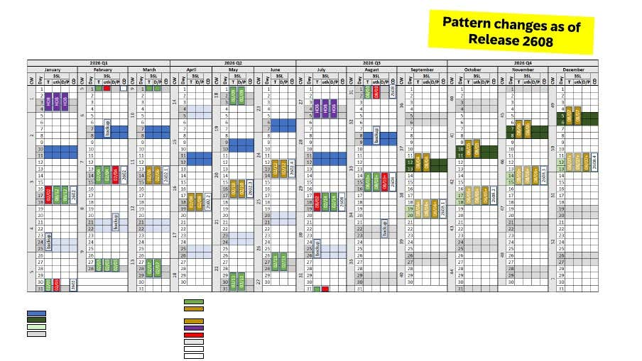

0
Upgrade windows
Australia/Sydney · APJ watch windows
SAP S/4HANA Cloud Maintenance Watch
A single view of upcoming 2608 upgrades, hotfix windows, standard maintenance, and online software changes.
Next window
Loading schedule
Calendar sync
Outlook watch items active
Source checked
2026-06-25
0
Maintenance / hotfix
0
Online software change
0
Technical prep
Upcoming Watch Schedule
Planned windows
SAP source set
Reference links
The weekly reminder checks SAP online and keeps the Outlook watch items aligned with any changed planning dates.

Calendar behavior
How the reminders behave
Events are created as free time, with reminders before the watch windows. Backup weekends are shown as all-day watch items.
Free calendar status
12-hour reminders
Import file ready
Weekly SAP refresh
Download .ics calendar